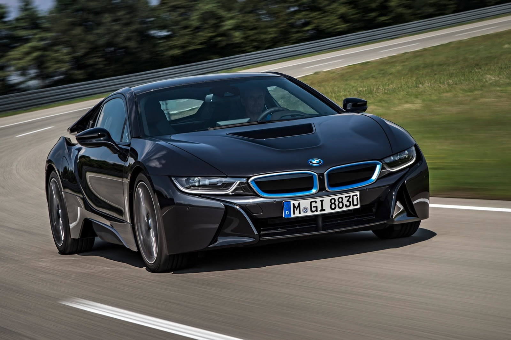

Bayerische Motoren Werke AG або скор. BMW (Баварські моторні заводи, БМВ; вимовляється: Бе́-еМ-Ве́) — німецький автобудівний та авіамоторний концерн і одноіменна торгова марка автомобілів преміум-
та люкс-класу і мотоциклів. Концерн є материнською фірмою (холдингом) об'єднання BMW Group, в яке входять такі окремі виробництва: мотоцикли BMW, автомобілі марок BMW, Rolls-Royce, MINI, дочірні виробництва BMW M, BMW та інші.
